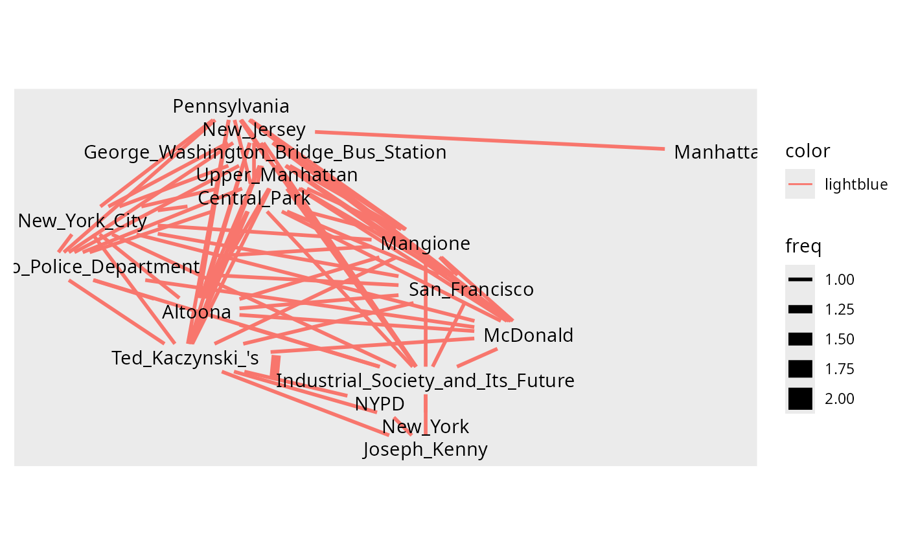
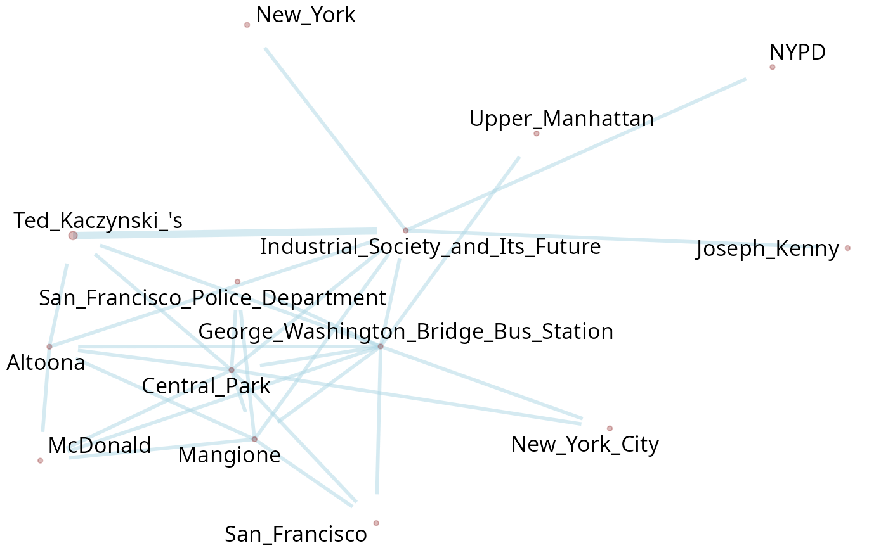
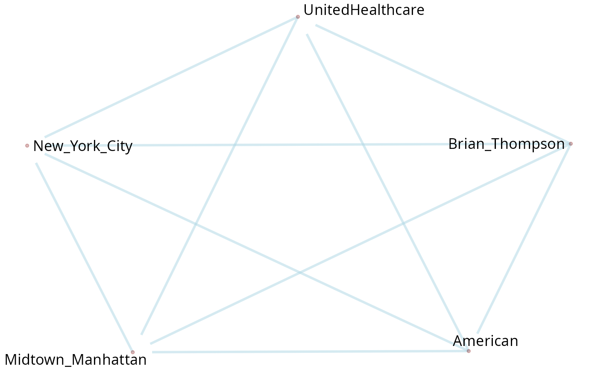

02-Extract entity co-ocurrences with POS
Source:vignettes/02-Extract-entity-co-ocurrences-with-POS.Rmd
02-Extract-entity-co-ocurrences-with-POS.RmdLoading the library
Extracting proper names or entities with regex are quick, but has its limitations. In this section, we will use the Part of Speech (POS) tags to extract the entities, proper names, noun phrases and its co-occurrences to generate graphs. In R, to tag words with POS, the main packages are {UDPipe} and {SpacyR}.
Installing SpacyR
First of all, we need to install the {spacyR} package. It is a wrap around the Spacy package in Python, and SpacyR deals with the boring parts of creating an exclusive python virtual environment. This package will extract the NER (named entities) and POS (part of speech tagging).
install.packages("spacyr")
# if you prefer, or maybe if the CRAN version is buggy, install the GitHub one:
pak::pkg_install("quanteda/spacyr")
# to Install spaCy and requirements (python env). With empty parameters, it will
# install the default “en_core_web_sm” model.
spacyr::spacy_install()
spacyr::spacy_initialize()The {networds} comes with this text sample. In this tutorial, we will use different parts of the text to a better visualization.
data(package = "networds") # list the available dataset in package networds
# Text_sample of the package
# An example of text. Showing only the firsts lines
txt_wiki[1:5]
#> [1] "Killing of Brian Thompson - Wikipedia"
#> [2] " "
#> [3] "Brian Thompson, the 50-year-old CEO of the American health insurance company UnitedHealthcare, was shot and killed in Midtown Manhattan, New York City, on December 4, 2024. The shooting occurred early in the morning outside an entrance to the New York Hilton Midtown hotel.[4] Thompson was in the city to attend an annual investors' meeting for UnitedHealth Group, the parent company of UnitedHealthcare. Prior to his death, he faced criticism for the company's rejection of insurance claims, and his family reported that he had received death threats in the past. The suspect, initially described as a white man wearing a mask, fled the scene.[1] On December 9, 2024, authorities arrested 26-year-old Luigi Mangione in Altoona, Pennsylvania, and charged him with Thompson's murder in a Manhattan court.[5][6][7]"
#> [4] "Authorities said Mangione was carrying a 3D-printed pistol and a 3D-printed suppressor consistent with those used in the attack, as well as a short handwritten letter to federal law enforcement (characterized as a manifesto) criticizing America's healthcare system, a U.S. passport, and multiple fraudulent IDs, including one with the same name the alleged shooter used to check into a hostel on the Upper West Side of Manhattan.[8][9][10] Authorities also said his fingerprints matched those that investigators found near the New York shooting scene.[11] Mangione was held without bail in Pennsylvania on charges of possession of an unlicensed firearm, forgery, and providing false New Jersey-resident identification to police.[12] Mangione also has an arrest warrant with five felony counts in New York, including second-degree murder.[13] Mangione's lawyer said he will plead not guilty to the charges.[12] Police believe that he was inspired by Ted Kaczynski's essay Industrial Society and Its Future (1995), and motivated by his personal views on health insurance.[14][15] They say an injury he suffered may have played a part.[16]"
#> [5] "Online and social media reactions to the killing ranged from contempt and mockery toward Thompson and UnitedHealth Group, to sympathy and praise for the assailant. More broadly, social media users criticized the U.S. healthcare system, and many users characterized the killing as deserved or justified. These attitudes were related to anger over UnitedHealth's business practices and those of the United States health insurance industry in general – primarily the strategy to deny coverage to clients. In particular, Thompson's death was compared to the harm or death experienced by clients who were denied coverage by insurance companies. Some public officials expressed dismay and offered condolences to Thompson's family. Inquiries about protective services and security for CEOs and corporate executives surged following the killing. "
POS <- txt_wiki |> spacyr::spacy_parse()
#> successfully initialized (spaCy Version: 3.8.5, language model: en_core_web_sm)
# parsing the POS tagging in itExtracting entities
The package {spacyr} has two functions useful in this section. Both of them conflate compound nouns, like “New” and “York” into “New_York”. The first one, extract only the entities
POS |>
spacyr::entity_extract() |>
dplyr::as_tibble() # use tibble to better visualize
#> # A tibble: 284 × 4
#> doc_id sentence_id entity entity_type
#> <chr> <int> <chr> <chr>
#> 1 text1 1 Brian_Thompson_-_Wikipedia PERSON
#> 2 text3 1 Brian_Thompson PERSON
#> 3 text3 1 American NORP
#> 4 text3 1 UnitedHealthcare ORG
#> 5 text3 1 Midtown_Manhattan GPE
#> 6 text3 1 New_York_City GPE
#> 7 text3 2 the_New_York_Hilton_Midtown ORG
#> 8 text3 3 Thompson PERSON
#> 9 text3 3 UnitedHealth_Group ORG
#> 10 text3 3 UnitedHealthcare ORG
#> # ℹ 274 more rowsThe second one, conflates the compound nouns and preserve the other POS tags.
POS |>
spacyr::entity_consolidate() |>
dplyr::as_tibble() # use tibble to better visualize
#> # A tibble: 4,641 × 7
#> doc_id sentence_id token_id token lemma pos entity_type
#> <chr> <int> <dbl> <chr> <chr> <chr> <chr>
#> 1 text1 1 1 "Killing" "Kil… PROPN ""
#> 2 text1 1 2 "of" "of" ADP ""
#> 3 text1 1 3 "Brian_Thompson_-_Wikipe… "Bri… ENTI… "PERSON"
#> 4 text2 1 1 " " " " SPACE ""
#> 5 text3 1 1 "Brian_Thompson" "Bri… ENTI… "PERSON"
#> 6 text3 1 2 "," "," PUNCT ""
#> 7 text3 1 3 "the" "the" DET ""
#> 8 text3 1 4 "50_-_year_-_old" "50_… ENTI… "DATE"
#> 9 text3 1 5 "CEO" "ceo" NOUN ""
#> 10 text3 1 6 "of" "of" ADP ""
#> # ℹ 4,631 more rowsThis functions is used inside {networds}. Lets use the package text example.
POS |> group_ppn()
#> # A tibble: 4,975 × 8
#> # Groups: name [1,650]
#> doc_id sentence_id token_id token lemma pos entity name
#> <chr> <int> <int> <chr> <chr> <chr> <chr> <chr>
#> 1 text1 1 1 "Killing" "Killing" PROPN "" "Killin…
#> 2 text1 1 2 "of" "of" ADP "" "of Bri…
#> 3 text1 1 3 "Brian" "Brian" PROPN "PERSON_B" "of Bri…
#> 4 text1 1 4 "Thompson" "Thompson" PROPN "PERSON_I" "of Bri…
#> 5 text1 1 5 "-" "-" PUNCT "PERSON_I" "- Wiki…
#> 6 text1 1 6 "Wikipedia" "Wikipedia" PROPN "PERSON_I" "- Wiki…
#> 7 text2 1 1 " " " " SPACE "" " Bria…
#> 8 text3 1 1 "Brian" "Brian" PROPN "PERSON_B" " Bria…
#> 9 text3 1 2 "Thompson" "Thompson" PROPN "PERSON_I" " Bria…
#> 10 text3 1 3 "," "," PUNCT "" ","
#> # ℹ 4,965 more rowsWith the function in {networds}, is possible to give the whole text as input, search for a term/query. The package will tokenize in sentences (or in paragraphs, if specified in parameters), perform the POS tagging, and extract the graph. Is possible to run the whole process or go step by step, to understand what is going on. First, we’ll do the first option.
If the text worked is not great, is possible to extract the all the co-occurrences and then work, but it comes with costs. It can easily escalate a lot in size in many times the origial text size, take a lot of time and computational costs. For example, 345Mb of text can become 15Gb of POS tagged text. So, another approach is to build the co-occurrences more wisely, departing from specific words, then processing only the text that matters.
The function filter_by_query() tokenize the text by
sentence by default (to use paragraph instead, use the parameter
by_sentence = FALSE).
# tokenizing in sentences and filtering three lines that contains the word "police"
x <- txt_wiki[3:6] |> filter_by_query("Police")
x
#> [[1]]
#> character(0)
#>
#> [[2]]
#> [1] "11] Mangione was held without bail in Pennsylvania on charges of possession of an unlicensed firearm, forgery, and providing false New Jersey-resident identification to police.["
#> [2] "12] Police believe that he was inspired by Ted Kaczynski's essay Industrial Society and Its Future (1995), and motivated by his personal views on health insurance.["
#>
#> [[3]]
#> character(0)
#>
#> [[4]]
#> character(0)
class(x)
#> [1] "list"Is possible to return a vector instead of a list object
x <- txt_wiki[1:12] |> filter_by_query("Police", unlist = TRUE)
x
#> [1] "11] Mangione was held without bail in Pennsylvania on charges of possession of an unlicensed firearm, forgery, and providing false New Jersey-resident identification to police.["
#> [2] "12] Police believe that he was inspired by Ted Kaczynski's essay Industrial Society and Its Future (1995), and motivated by his personal views on health insurance.["
#> [3] "39] According to the police, he then left the city from the George Washington Bridge Bus Station farther uptown in Upper Manhattan.["
class(x)
#> [1] "character"The next step is the POS tagging using parsePOS().
txt_wiki[1:12] |>
filter_by_query("Police", unlist = TRUE) |>
parsePOS()
#> doc_id sentence_id entity entity_type
#> 1 text1 1 Pennsylvania GPE
#> 2 text1 1 New_Jersey GPE
#> 3 text1 1 Ted_Kaczynski_'s PERSON
#> 4 text1 1 Industrial_Society_and_Its_Future ORG
#> 5 text1 2 the_George_Washington_Bridge_Bus_Station ORG
#> 6 text1 2 Upper_Manhattan LOCThe next step is to get the graph using
get_cooc_entities()
x <- txt_wiki[2:44] |>
filter_by_query("Police") |>
parsePOS()
x |> dplyr::as_tibble() # use tibble to better visualize
#> # A tibble: 26 × 4
#> doc_id sentence_id entity entity_type
#> <chr> <int> <chr> <chr>
#> 1 text1 1 Pennsylvania GPE
#> 2 text1 1 New_Jersey GPE
#> 3 text2 1 Ted_Kaczynski_'s PERSON
#> 4 text2 1 Industrial_Society_and_Its_Future ORG
#> 5 text1 2 the_George_Washington_Bridge_Bus_Station ORG
#> 6 text1 2 Upper_Manhattan LOC
#> 7 text1 1 Central_Park LOC
#> 8 text1 1 New_York_City GPE
#> 9 text1 2 Mangione ORG
#> 10 text1 2 the_San_Francisco_Police_Department ORG
#> # ℹ 16 more rows
g <- get_cooc_entities(x)
g
#> $graphs
#> # A tibble: 88 × 3
#> n1 n2 freq
#> <chr> <chr> <int>
#> 1 Ted_Kaczynski_'s Industrial_Society_and_Its_Future 2
#> 2 Altoona Industrial_Society_and_Its_Future 1
#> 3 Altoona McDonald 1
#> 4 Altoona Ted_Kaczynski_'s 1
#> 5 Central_Park Altoona 1
#> 6 Central_Park Industrial_Society_and_Its_Future 1
#> 7 Central_Park Mangione 1
#> 8 Central_Park McDonald 1
#> 9 Central_Park New_York_City 1
#> 10 Central_Park San_Francisco 1
#> # ℹ 78 more rows
#>
#> $isolated_nodes
#> node freq
#> 1 American 1
#>
#> $nodes
#> # A tibble: 18 × 2
#> node freq
#> <chr> <int>
#> 1 Industrial_Society_and_Its_Future 2
#> 2 New_Jersey 2
#> 3 Ted_Kaczynski_'s 2
#> 4 Altoona 1
#> 5 American 1
#> 6 Central_Park 1
#> 7 Joseph_Kenny 1
#> 8 Mangione 1
#> 9 Manhattan 1
#> 10 McDonald 1
#> 11 New_York 1
#> 12 New_York_City 1
#> 13 NYPD 1
#> 14 Pennsylvania 1
#> 15 San_Francisco 1
#> 16 the_George_Washington_Bridge_Bus_Station 1
#> 17 the_San_Francisco_Police_Department 1
#> 18 Upper_Manhattan 1Visualizing the graph. It can be done with the function
q_plot(), the quicker plot, but also with less
customization options.
g |> q_plot()
To a better control over the features of the graph,
plot_pos_graph() gives more options. The size of dots shows
the frequency of term. The thickness of edges shows how often is the co
occurrence of nodes. The text used is very small, so there is no huge
differences visible. We opted to maintain the words in the same size as
matter of.
graph_wiki <- txt_wiki[2:44] |>
filter_by_query("Police") |>
parsePOS() |>
get_cooc_entities()
plot_pos_graph(graph_wiki) # TODO estava dando erro
This viz function is based on {ggraph}, that is based on {ggplot2}. So it is possible to customize it even more.
plot_pos_graph(graph_wiki,
font_size = 1.3,
edge_color = "tomato",
point_color = "aquamarine4"
) +
ggplot2::labs(
title = "Wordnetwork of Nouns in a Wikipedia text",
caption = "The size of dots shows the frequency of the term."
)
Plotting an interactive graph (the nodes can become in a crazy dance to find the best distance between themselves)
graph_wiki$graphs |> interactive_graph()
graph <- txt_wiki[2:44] |>
filter_by_query("Brian") |>
parsePOS() |>
get_cooc_entities()
plot_pos_graph(graph)
graph$graphs |> interactive_graph()To get the graph of entities and nouns:
graph_ppn <- filter_by_query(txt_wiki[2:44], "Police") |>
parsePOS(only_entities = FALSE) |>
dplyr::filter(entity_type != "CARDINAL") |> # to clean the graph
dplyr::mutate(token = gsub("Police", "police", token)) |> # normalize the term "police"
get_cooc()
graph_ppn
#> $graphs
#> # A tibble: 401 × 3
#> n1 n2 freq
#> <chr> <chr> <int>
#> 1 police Mangione 3
#> 2 3D Manhattan 2
#> 3 3D New_Jersey 2
#> 4 3D claim 2
#> 5 3D driver 2
#> 6 3D hostel 2
#> 7 3D license 2
#> 8 3D name 2
#> 9 3D one 2
#> 10 3D police 2
#> # ℹ 391 more rows
#>
#> $isolated_nodes
#> [1] node
#> <0 rows> (or 0-length row.names)
#>
#> $nodes
#> # A tibble: 85 × 2
#> node freq
#> <chr> <int>
#> 1 police 13
#> 2 Mangione 6
#> 3 shooter 4
#> 4 3D 2
#> 5 city 2
#> 6 Industrial_Society_and_Its_Future 2
#> 7 motive 2
#> 8 New_Jersey 2
#> 9 Pennsylvania 2
#> 10 suspect 2
#> # ℹ 75 more rows
interactive_graph(graph_ppn$graphs)
graph_ppn |> plot_pos_graph()
Sotu example
Using data from {SOTU} package, United States Presidential State of the Union Addresses.
Using another languages
How {networds} uses spacy to tag the words, the user must initialize
the model for the language. By default, spacy loads the English model.
If the model was previously used, to change the model, it is necessary
to end the loaded model with spacyr::spacy_finalize() and
then load the new model. For example, to load the Portuguese model, use
with spacyr::spacy_initialize(model = "pt_core_news_lg").
If you just started the package with library(networds), you
can simply run spacy_initialize(model = "pt_core_news_lg")
in the console.
To download other language model, check models available at spacy.io/usage/models Ex.: installing portuguese, the model available are:
modelsPT <- c("pt_core_news_sm", "pt_core_news_md", "pt_core_news_lg")
# installing the bigger model
spacyr::spacy_download_langmodel(modelsPT[3])